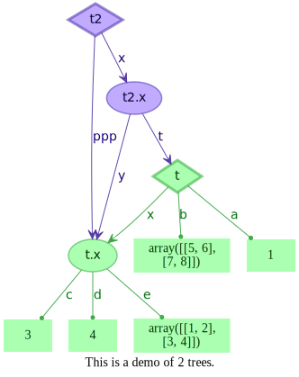

treevalue.tree.tree¶
TreeValue¶
-
class
treevalue.tree.tree.TreeValue¶ - Overview:
Base framework of tree value. And if the fast functions and operators are what you need, please use FastTreeValue in treevalue.tree.general. The TreeValue class is a light-weight framework just for DIY.
-
__bool__()¶ self != 0
-
__contains__()¶ - Overview:
Check if attribute is in this tree value.
- Arguments:
key (
str): Attribute name.
- Returns:
exist (
bool): If attribute is in this tree value.
- Example:
>>> t = TreeValue({'a': 1, 'b': 2, 'x': {'c': 3, 'd': 4}}) >>> 'a' in t # True >>> 'b' in t # True >>> 'c' in t # False
-
__delattr__()¶ - Overview:
Delete attribute from tree value.
- Arguments:
key (
str): Attribute name.
- Example:
>>> t = TreeValue({'a': 1, 'b': 2, 'x': {'c': 3, 'd': 4}}) >>> del t.a # t will be TreeValue({'b': 2, 'x': {'c': 3, 'd': 4}}) >>> del t.x.c # t will be TreeValue({'b': 2, 'x': {'d': 4}})
-
__eq__()¶ - Overview:
Check the equality of two tree values.
- Arguments:
other (
TreeValue): Another tree value.
- Returns:
equal (
bool): Equality.
- Example:
>>> t = TreeValue({'a': 1, 'b': 2, 'x': {'c': 3, 'd': 4}}) >>> clone(t) == t # True >>> t == TreeValue({'a': 1, 'b': 2, 'x': {'c': 3, 'd': 5}}) # False >>> t == TreeValue({'a': 1, 'b': 2, 'x': {'c': 3, 'd': 4}}) # True >>> t == FastTreeValue({'a': 1, 'b': 2, 'x': {'c': 3, 'd': 4}}) # False (type not match)
-
__getattr__()¶ - Overview:
Get item from this tree value.
- Arguments:
key (
str): Attribute name.
- Returns:
attr (:obj:): Target attribute value.
- Example:
>>> t = TreeValue({'a': 1, 'b': 2, 'x': {'c': 3, 'd': 4}}) >>> t.a # 1 >>> t.b # 2 >>> t.x.c # 3
-
__getstate__()¶ - Overview:
Serialize operation, can support pickle.dumps.
- Examples:
>>> import pickle >>> from treevalue import TreeValue >>> >>> t = TreeValue({'a': 1, 'b': 2, 'x': {'c': 3}}) >>> bin_ = pickle.dumps(t) # dump it to binary >>> pickle.loads(bin_) # TreeValue({'a': 1, 'b': 2, 'x': {'c': 3}})
-
__hash__()¶ - Overview:
Hash value of current object.
- Returns:
hash (
int): Hash code of current object.
-
__init__()¶ - Overview:
Constructor of TreeValue.
- Arguments:
data: (
Union[TreeStorage, 'TreeValue', dict]): Original data to init a tree value, can be a TreeStorage, TreeValue or dict.
- Example:
>>> TreeValue({'a': 1, 'b': 2, 'x': {'c': 3, 'd': 4}}) >>> # this is the tree: >>> # <root> -+--> a (1) >>> # +--> b (2) >>> # +--> x >>> # +--> c (3) >>> # +--> d (4)
-
__iter__()¶ - Overview:
Get iterator of this tree value.
- Returns:
iter (
iter): Iterator for keys and values.
- Example:
>>> t = TreeValue({'a': 1, 'b': 2, 'x': 3}) >>> for key, value in t: >>> print(key, value)
The output will be:
>>> a 1 >>> b 2 >>> x 3
-
__len__()¶ - Overview:
Get count of the keys.
- Returns:
length (
int): Count of the keys.
- Example:
>>> t = TreeValue({'a': 1, 'b': 2, 'x': {'c': 3, 'd': 4}}) >>> len(t) # 3 >>> len(t.x) # 2
-
__repr__()¶ - Overview:
Get representation format of tree value.
- Returns:
repr (
str): Representation string.
- Example:
>>> t = TreeValue({'a': 1, 'b': 2, 'x': {'c': 3, 'd': 4}}) >>> repr(t) <TreeValue 0x7f22681c69a0> ├── a --> 1 ├── b --> 2 └── x --> <TreeValue 0x7f226629bc70> ├── c --> 3 └── d --> 4
-
__setattr__()¶ - Overview:
Set sub node to this tree value.
- Arguments:
key (
str): Attribute name.value (:obj:): Sub value.
- Example:
>>> t = TreeValue({'a': 1, 'b': 2, 'x': {'c': 3, 'd': 4}}) >>> t.a = 3 # t will be TreeValue({'a': 3, 'b': 2, 'x': {'c': 3, 'd': 4}}) >>> t.b = {'x': 1, 'y': 2} # t will be TreeValue({'a': 3, 'b': {'x': 1, 'y': 2}, 'x': {'c': 3, 'd': 4}})
-
__setstate__(state)¶ - Overview:
Deserialize operation, can support pickle.loads.
- Arguments:
tree (
Tree): Deserialize tree.
- Examples:
>>> import pickle >>> from treevalue import TreeValue >>> >>> t = TreeValue({'a': 1, 'b': 2, 'x': {'c': 3}}) >>> bin_ = pickle.dumps(t) # dump it to binary >>> pickle.loads(bin_) # TreeValue({'a': 1, 'b': 2, 'x': {'c': 3}})
-
__str__()¶ Return str(self).
-
_attr_extern(key)¶ - Overview:
External protected function for support the unfounded attributes. Default is raise a KeyError.
- Arguments:
key (
str): Attribute name.
- Returns:
- return (:obj:): Anything you like,
and if it is not able to validly return anything, just raise an exception here.
jsonify¶
-
treevalue.tree.tree.jsonify(val)¶ - Overview:
Dump TreeValue object to json data.
- Arguments:
tree (
TreeValue): Tree value object or tree storage object.
- Returns:
json (
dict): Dumped json data.
- Example:
>>> jsonify(TreeValue({'a': 1, 'b': 2, 'x': {'c': 3, 'd': 4}})) # {'a': 1, 'b': 2, 'x': {'c': 3, 'd': 4}}
clone¶
-
treevalue.tree.tree.clone(t, copy_value)¶ - Overview:
Create a fully clone of the given tree.
- Arguments:
tree (
_TreeValue): Tree value objectcopy_value (
Union[None, bool, Callable, Any]): Deep copy value or not, default is None which means do not deep copy the values. If deep copy is required, just set it to True.
- Returns:
tree (
_TreeValue): Cloned tree value object.
- Example:
>>> t = TreeValue({'a': 1, 'b': 2, 'x': {'c': 3, 'd': 4}}) >>> clone(t.x) # TreeValue({'c': 3, 'd': 4})
typetrans¶
-
treevalue.tree.tree.typetrans(t, return_type)¶ - Overview:
Transform tree value object to another tree value type. Attention that in this function, no copy will be made, the original tree value and the transformed tree value are using the same space area.
- Arguments:
tree (
TreeValue): Tree value objectreturn_type (
Type[_TreeValue]): Target tree value type
- Returns:
tree (
_TreeValue): Transformed tree value object.
- Example:
>>> t = MyTreeValue({'a': 1, 'b': 2, 'x': {'c': 3, 'd': 4}}) >>> typetrans(t, TreeValue) # TreeValue({'a': 1, 'b': 2, 'x': {'c': 3, 'd': 4}})
walk¶
-
treevalue.tree.tree.walk(tree, include_nodes)¶ - Overview:
Walk the values and nodes in the tree. The order of walk is not promised, if you need the ordered walking result, just use function
sortedat the outer side ofwalk().- Arguments:
tree: Tree value object to be walked.
- include_nodes (
bool): Not only the value nodes will be walked, but the tree nodes as well.
- include_nodes (
- Returns:
- iter: Iterator to walk the given tree, contains 2 items, the 1st one is the full
path of the node, the 2nd one is the value.
mapping¶
-
treevalue.tree.tree.mapping(tree, func)¶ - Overview:
Do mapping on every value in this tree.
- Arguments:
tree (
_TreeValue): Tree value objectfunc (
Callable): Function for mapping
- Returns:
tree (
_TreeValue): Mapped tree value object.
- Example:
>>> t = TreeValue({'a': 1, 'b': 2, 'x': {'c': 3, 'd': 4}}) >>> mapping(t, lambda x: x + 2) # TreeValue({'a': 3, 'b': 4, 'x': {'c': 5, 'd': 6}}) >>> mapping(t, lambda: 1) # TreeValue({'a': 1, 'b': 1, 'x': {'c': 1, 'd': 1}}) >>> mapping(t, lambda x, p: p) # TreeValue({'a': ('a',), 'b': ('b',), 'x': {'c': ('x', 'c'), 'd': ('x', 'd')}})
mask¶
-
treevalue.tree.tree.mask(tree, mask_, remove_empty)¶ - Overview:
Filter the element in the tree with a mask
- Arguments:
tree (
_TreeValue): Tree value objectmask_ (
TreeValue): Tree value mask objectremove_empty (
bool): Remove empty tree node automatically, default is True.
- Returns:
tree (
_TreeValue): Filtered tree value object.
- Example:
>>> t = TreeValue({'a': 1, 'b': 2, 'x': {'c': 3, 'd': 4}}) >>> mask(t, TreeValue({'a': True, 'b': False, 'x': False})) # TreeValue({'a': 1}) >>> mask(t, TreeValue({'a': True, 'b': False, 'x': {'c': True, 'd': False}})) # TreeValue({'a': 1, 'x': {'c': 3}})
filter_¶
-
treevalue.tree.tree.filter_(tree, func, remove_empty)¶ - Overview:
Filter the element in the tree with a predict function.
- Arguments:
tree (
_TreeValue): Tree value objectfunc (
Callable): Function for filteringremove_empty (
bool): Remove empty tree node automatically, default is True.
- Returns:
tree (
_TreeValue): Filtered tree value object.
- Example:
>>> t = TreeValue({'a': 1, 'b': 2, 'x': {'c': 3, 'd': 4}}) >>> filter_(t, lambda x: x < 3) # TreeValue({'a': 1, 'b': 2}) >>> filter_(t, lambda x: x < 3, False) # TreeValue({'a': 1, 'b': 2, 'x': {}}) >>> filter_(t, lambda x: x % 2 == 1) # TreeValue({'a': 1, 'x': {'c': 3}}) >>> filter_(t, lambda x, p: p[0] in {'b', 'x'}) # TreeValue({'b': 2, 'x': {'c': 3, 'd': 4}})
union¶
-
treevalue.tree.tree.union(*trees, return_type=None, inherit=True)¶ - Overview:
Union tree values together.
- Arguments:
trees (
_TreeValue): Tree value objects.return_type (
Optional[Type[_ClassType]]): Return type of the wrapped function, default is TreeValue.inherit (
bool): Allow inherit in wrapped function, default is True.
- Returns:
result (
TreeValue): Unionised tree value.
- Example:
>>> t = TreeValue({'a': 1, 'b': 2, 'x': {'c': 3, 'd': 4}}) >>> tx = mapping(t, lambda v: v % 2 == 1) >>> union(t, tx) # TreeValue({'a': (1, True), 'b': (2, False), 'x': {'c': (3, True), 'd': (4, False)}})
subside¶
-
treevalue.tree.tree.subside(value, dict_, list_, tuple_, return_type, inherit)¶ - Overview:
Drift down the structures (list, tuple, dict) down to the tree’s value.
- Arguments:
value (:obj:): Original value object, may be nested dict, list or tuple.
dict_ (
bool): Enable dict subside, default is True.list_ (
bool): Enable list subside, default is True.tuple_ (
bool): Enable list subside, default is True.return_type (
Optional[Type[_ClassType]]): Return type of the wrapped function, will be auto detected when there is exactly one tree value type in this original value, otherwise the default will be TreeValue.inherit (
bool): Allow inherit in wrapped function, default is True.
- Returns:
return (
_TreeValue): Subsided tree value.
- Example:
>>> data = { >>> 'a': TreeValue({'a': 1, 'b': 2}), >>> 'x': { >>> 'c': TreeValue({'a': 3, 'b': 4}), >>> 'd': [ >>> TreeValue({'a': 5, 'b': 6}), >>> TreeValue({'a': 7, 'b': 8}), >>> ] >>> }, >>> 'k': '233' >>> } >>> >>> tree = subside(data) >>> # tree should be --> TreeValue({ >>> # 'a': raw({'a': 1, 'k': '233', 'x': {'c': 3, 'd': [5, 7]}}), >>> # 'b': raw({'a': 2, 'k': '233', 'x': {'c': 4, 'd': [6, 8]}}), >>> #}), all structures above the tree values are subsided to the bottom of the tree.
rise¶
-
treevalue.tree.tree.rise(tree, dict_=True, list_=True, tuple_=True, template=None)¶ - Overview:
Make the structure (dict, list, tuple) in value rise up to the top, above the tree value.
- Arguments:
tree (
_TreeValue): Tree value objectdict_ (
bool): Enable dict rise, default is True.list_ (
bool): Enable list rise, default is True.tuple_ (
bool): Enable list rise, default is True.template (:obj:): Rising template, default is NO_RISE_TEMPLATE, which means auto detect.
- Returns:
risen (:obj:): Risen value.
- Example:
>>> t = TreeValue({'x': raw({'a': [1, 2], 'b': [2, 3]}), 'y': raw({'a': [5, 6, 7], 'b': [7, 8]})}) >>> dt = rise(t) >>> # dt will be {'a': <TreeValue 1>, 'b': [<TreeValue 2>, <TreeValue 3>]} >>> # TreeValue 1 will be TreeValue({'x': [1, 2], 'y': [5, 6, 7]}) >>> # TreeValue 2 will be TreeValue({'x': 2, 'y': 7}) >>> # TreeValue 3 will be TreeValue({'x': 3, 'y': 8}) >>> >>> t2 = TreeValue({'x': raw({'a': [1, 2], 'b': [2, 3]}), 'y': raw({'a': [5, 6], 'b': [7, 8]})}) >>> dt2 = rise(t2) >>> # dt2 will be {'a': [<TreeValue 1>, <TreeValue 2>], 'b': [<TreeValue 3>, <TreeValue 4>]} >>> # TreeValue 1 will be TreeValue({'x': 1, 'y': 5}) >>> # TreeValue 2 will be TreeValue({'x': 2, 'y': 6}) >>> # TreeValue 3 will be TreeValue({'x': 2, 'y': 7}) >>> # TreeValue 4 will be TreeValue({'x': 3, 'y': 8}) >>> >>> dt3 = rise(t2, template={'a': None, 'b': None}) >>> # dt3 will be {'a': <TreeValue 1>, 'b': <TreeValue 2>} >>> # TreeValue 1 will be TreeValue({'x': [1, 2], 'y': [5, 6]}) >>> # TreeValue 2 will be TreeValue({'x': [2, 3], 'y': [7, 8]})
reduce_¶
-
treevalue.tree.tree.reduce_(tree, func)¶ - Overview
Reduce the tree to value.
- Arguments:
tree (
_TreeValue): Tree value objectfunc (:obj:): Function for reducing
- Returns:
result (:obj:): Reduce result
- Examples:
>>> from functools import reduce >>> >>> t = TreeValue({'a': 1, 'b': 2, 'x': {'c': 3, 'd': 4}}) >>> reduce_(t, lambda **kwargs: sum(kwargs.values())) # 10, 1 + 2 + (3 + 4) >>> reduce_(t, lambda **kwargs: reduce(lambda x, y: x * y, list(kwargs.values()))) # 24, 1 * 2 * (3 * 4)
graphics¶
-
treevalue.tree.tree.graphics(*trees, title: Optional[str] = None, cfg: Optional[dict] = None, dup_value: Union[bool, Callable, type, Tuple[Type, …]] = False, repr_gen: Optional[Callable] = None, node_cfg_gen: Optional[Callable] = None, edge_cfg_gen: Optional[Callable] = None) → graphviz.graphs.Digraph[source]¶ - Overview:
Draw graph by tree values. Multiple tree values is supported.
- Args:
trees: Given tree values, tuples of Tuple[TreeValue, str] or tree values are both accepted.
title (
Optional[str]): Title of the graph.cfg (
Optional[dict]): Configuration of the graph.dup_value (
Union[bool, Callable, type, Tuple[Type, ...]]): Value duplicator, set True to make value with same id use the same node in graph, you can also define your own node id algorithm by this argument. Default is False which means do not use value duplicator.repr_gen (
Optional[Callable]): Representation format generator, default is None which means using repr function.node_cfg_gen (
Optional[Callable]): Node configuration generator, default is None which means no configuration.edge_cfg_gen (
Optional[Callable]): Edge configuration generator, default is None which means no configuration.
- Returns:
graph (
Digraph): Generated graph of tree values.
Here is an example of graphics function. The source code is
1 2 3 4 5 6 7 8 9 10 11 12 13 14 15 16 17 18 19 20 21 22 23 24 25 26 27 | import numpy as np from treevalue import FastTreeValue, graphics, TreeValue class MyFastTreeValue(FastTreeValue): pass if __name__ == '__main__': t = MyFastTreeValue({ 'a': 1, 'b': np.array([[5, 6], [7, 8]]), 'x': { 'c': 3, 'd': 4, 'e': np.array([[1, 2], [3, 4]]) }, }) t2 = TreeValue({'ppp': t.x, 'x': {'t': t, 'y': t.x}}) g = graphics( (t, 't'), (t2, 't2'), title="This is a demo of 2 trees.", cfg={'bgcolor': '#ffffff00'}, ) g.render('graphics.dat.gv', format='svg') |
The generated graphviz source code should be
1 2 3 4 5 6 7 8 9 10 11 12 13 14 15 16 17 18 19 20 21 22 23 24 25 | // This is a demo of 2 trees.
digraph this_is_a_demo_of_2_trees {
graph [bgcolor="#ffffff00" label="This is a demo of 2 trees."]
node_7f85aff1ec40 [label=t color="#3eb24899" fillcolor="#73ff7e99" fontcolor="#003304ff" fontname="Times-Roman bold" penwidth=3 shape=diamond style=filled]
node_7f85aff1ee50 [label=t2 color="#5b3eb299" fillcolor="#9673ff99" fontcolor="#0d0033ff" fontname="Times-Roman bold" penwidth=3 shape=diamond style=filled]
value__node_7f85aff1ec40__a [label=1 color="#3eb24800" fillcolor="#73ff7e99" fontcolor="#003304ff" fontname="Times-Roman" penwidth=1.5 shape=box style=filled]
node_7f85aff1ec40 -> value__node_7f85aff1ec40__a [label=a arrowhead=dot arrowsize=0.5 color="#1f9929cc" fontcolor="#00730aff" fontname="Times-Roman bold"]
value__node_7f85aff1ec40__b [label="array([[5, 6],
[7, 8]])" color="#3eb24800" fillcolor="#73ff7e99" fontcolor="#003304ff" fontname="Times-Roman" penwidth=1.5 shape=box style=filled]
node_7f85aff1ec40 -> value__node_7f85aff1ec40__b [label=b arrowhead=dot arrowsize=0.5 color="#1f9929cc" fontcolor="#00730aff" fontname="Times-Roman bold"]
node_7f85b0979fd0 [label="t.x" color="#3eb24899" fillcolor="#73ff7e99" fontcolor="#003304ff" fontname="Times-Roman bold" penwidth=1.5 shape=ellipse style=filled]
node_7f85aff1ec40 -> node_7f85b0979fd0 [label=x arrowhead=vee arrowsize=1.0 color="#1f9929cc" fontcolor="#00730aff" fontname="Times-Roman bold"]
node_7f85aff1ee50 -> node_7f85b0979fd0 [label=ppp arrowhead=vee arrowsize=1.0 color="#3d1f99cc" fontcolor="#1d0073ff" fontname="Times-Roman bold"]
node_7f85aff1eb80 [label="t2.x" color="#5b3eb299" fillcolor="#9673ff99" fontcolor="#0d0033ff" fontname="Times-Roman bold" penwidth=1.5 shape=ellipse style=filled]
node_7f85aff1ee50 -> node_7f85aff1eb80 [label=x arrowhead=vee arrowsize=1.0 color="#3d1f99cc" fontcolor="#1d0073ff" fontname="Times-Roman bold"]
value__node_7f85b0979fd0__c [label=3 color="#3eb24800" fillcolor="#73ff7e99" fontcolor="#003304ff" fontname="Times-Roman" penwidth=1.5 shape=box style=filled]
node_7f85b0979fd0 -> value__node_7f85b0979fd0__c [label=c arrowhead=dot arrowsize=0.5 color="#1f9929cc" fontcolor="#00730aff" fontname="Times-Roman bold"]
value__node_7f85b0979fd0__d [label=4 color="#3eb24800" fillcolor="#73ff7e99" fontcolor="#003304ff" fontname="Times-Roman" penwidth=1.5 shape=box style=filled]
node_7f85b0979fd0 -> value__node_7f85b0979fd0__d [label=d arrowhead=dot arrowsize=0.5 color="#1f9929cc" fontcolor="#00730aff" fontname="Times-Roman bold"]
value__node_7f85b0979fd0__e [label="array([[1, 2],
[3, 4]])" color="#3eb24800" fillcolor="#73ff7e99" fontcolor="#003304ff" fontname="Times-Roman" penwidth=1.5 shape=box style=filled]
node_7f85b0979fd0 -> value__node_7f85b0979fd0__e [label=e arrowhead=dot arrowsize=0.5 color="#1f9929cc" fontcolor="#00730aff" fontname="Times-Roman bold"]
node_7f85aff1eb80 -> node_7f85aff1ec40 [label=t arrowhead=vee arrowsize=1.0 color="#3d1f99cc" fontcolor="#1d0073ff" fontname="Times-Roman bold"]
node_7f85aff1eb80 -> node_7f85b0979fd0 [label=y arrowhead=vee arrowsize=1.0 color="#3d1f99cc" fontcolor="#1d0073ff" fontname="Times-Roman bold"]
}
|
The graph should be
Also, graphics function can support value duplication. For if the value nodes are using the same object, they will be displayed in the same node of the generated graph, such as the source code
below
1 2 3 4 5 6 7 8 9 10 11 12 13 14 15 16 17 18 19 20 21 22 23 24 25 26 27 28 29 30 31 32 33 34 35 36 37 38 39 40 | import numpy as np from treevalue import FastTreeValue, graphics class MyFastTreeValue(FastTreeValue): pass if __name__ == '__main__': t = MyFastTreeValue({ 'a': [4, 3, 2, 1], 'b': np.array([[5, 6], [7, 8]]), 'x': { 'c': np.array([[5, 7], [8, 6]]), 'd': {'a', 'b', 'c'}, 'e': np.array([[1, 2], [3, 4]]) }, }) t1 = MyFastTreeValue({ 'aa': t.a, 'bb': np.array([[5, 6], [7, 8]]), 'xx': { 'cc': t.x.c, 'dd': t.x.d, 'ee': np.array([[1, 2], [3, 4]]) }, }) g = graphics( (t, 't'), (t1, 't1'), (MyFastTreeValue({'a': t, 'b': t1, 'c': [1, 2], 'd': t1.xx}), 't2'), # Here is the dup value, with several types # np.ndarray and list type will use the same value node, # but set type is not in this tuple, so will not share the same node. dup_value=(np.ndarray, list), title="This is a demo of 2 trees with dup value.", cfg={'bgcolor': '#ffffff00'}, ) g.render('graphics_dup_value.dat.gv', format='svg') |
The graph of the case with dup_value should be

The return value’s type of function graphics is class graphviz.dot.Digraph, from the opensource library graphviz, for further information of this project and graphviz.dot.Digraph’s usage, take a look at:
dump¶
dumps¶
-
treevalue.tree.tree.dumps(t: _TreeType, compress=None) → bytes[source]¶ - Overview:
Dump tree value to file.
- Arguments:
t (
_TreeType): Tree value object.compress: Compress object, may be compression function, tuple of functions or module (
compressanddecompressrequired).
- Returns:
data (
bytes): Dumped binary data.
load¶
-
treevalue.tree.tree.load(file, type_: Type[_TreeType] = <class 'treevalue.tree.tree.tree.TreeValue'>, decompress: Optional[Callable] = None) → _TreeType[source]¶ - Overview:
Load tree value object from file.
- Arguments:
file: Original file.
type_ (
Type[_TreeType]): Type of tree value, default isTreeValue.decompress (
Optional[Callable]): Decompress function, default isNonewhich means do not do any decompression.
- Returns:
tree (
_TreeType): Tree value object.
loads¶
-
treevalue.tree.tree.loads(data: Union[bytes, bytearray], type_: Optional[Type[_TreeType]] = <class 'treevalue.tree.tree.tree.TreeValue'>, decompress: Optional[Callable] = None) → _TreeType[source]¶ - Overview:
Load tree value object from file.
- Arguments:
data (
Union[bytes, bytearray]): Binary data.type_ (
Type[_TreeType]): Type of tree value, default isTreeValue.decompress (
Optional[Callable]): Decompress function, default isNonewhich means do not do any decompression.
- Returns:
tree (
_TreeType): Tree value object.